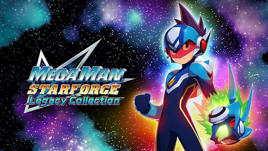

Kotobuyika afirma que el Kit Desconocido de
Mega Man
sigue en desarrollo
En el
All Japan Model and Hobby Show
de 2025,
x_ledur,
entusiasta de los kits de modelos, conoció a Shohei Chiba, el lead planner tras los kits de
Mega Man
de Kotobuyika. Aunque estaba ocupado, Chiba tuvo un momento para charlar y confirmar que el
kit misterioso que se vio el 31 de enero de 2024
"sigue vivo". Esta es la primera mención oficial del proyecto desde su revelación.
La silueta ha iniciado un puñado de debates entre los fans. Aunque han habido suposiciones que varían de decir que podría ser Copy X, X de
Command Mission
o incluso algo salido de
X DiVE,
ninguno parece encajar del todo con la silueta. La licencia de Kotobuyika para producir kits de modelo de
Mega Man,
originalmente dada en 2010,
solo cubre personajes que hayan aparecido en juegos oficiales.
Esto quiere decir que, a menos que los términos hayan cambiado, el nuevo kit no puede ser una creación original de Kotobuyika; tiene que estar basado en un personaje existente de un juego.
Todo lo que podemos hacer por ahora es esperar a que Kotobuyika o Capcom finalmente alcen el telón.
Mega Man ZX y Mega Man Legends Timelines se retrasan hasta el 5 de noviembre
Mega Man ZX Timelines
originalmente estaba programado para salir esta semana y, poco después, le seguiría
Mega Man Legends Timelines.
Sin embargo, de acuerdo a
Lunar Distribution,
distribuidora principal de Udon Entertainment, ambos volúmenes han sufrido un retraso de último minuto y ahora se ven obligado a salir el
miércoles, 5 de noviembre.
Aunque el retraso no ha sido grave, los fans tendrán el retazo de esperanza de poder recoger ambos volúmenes el mismo día.
He aquí las sinopsis oficiales:
Mega Man ZX Timelines
- ¡Siglos en el futuro, se libra una batalla por el control de los Biometales — artefactos vivos que contienen datos de armas poderosas! ¡Una persona se interpone en el camino de los destructivos Pseudoroids y su maestro oculto usando este poder para el mal — Vent, un Mega Man con el poder combinado del Biometal Z y el Biometal X!
Mega Man Legends Timelines
- En el lejano futuro, el Excavador conocido como MegaMan Volnutt ha descubierto un valioso artefacto de un pasado distante. ¿Podría ser el secreto para desbloquear una tecnología olvidada hace tiempo? La ladrona Tron Bonne tan solo quiere saber... ¡¿cuánto vale?! ¡Una nueva aventura aguarda en los Halcyon Days!
¡Mega Man y Proto Man llegarán a
Sonic Racing: CrossWorlds
en 2026!
SEGA
ha confirmado en el State of Play que Mega Man y Proto Man llegarán a
Sonic Racing: CrossWorlds
como personajes jugables en un pack DLC que saldrá el año que viene.
El pack incluye a los dos hermanos, al Rush Roadster de
Mega Man: Battle & Chase,
y un nuevo circuito temático del castillo de Wily, basado en
Mega Man 2.
¡Echadle un vistazo al tráiler para verles en acción!
Detalles de
Mega Man Star Force Legacy Collection -
Opciones de Visualización, Desactivar Encuentros Aleatorios, Juego Online y Más

Siguiendo al
nuevo tráiler de la Tokyo Game Show,
Rockman Unity
ha ido a Twitter para expandir en las numerosas funciones que
Mega Man Star Force Legacy Collection
traerá y han sido señaladas en el tráiler...